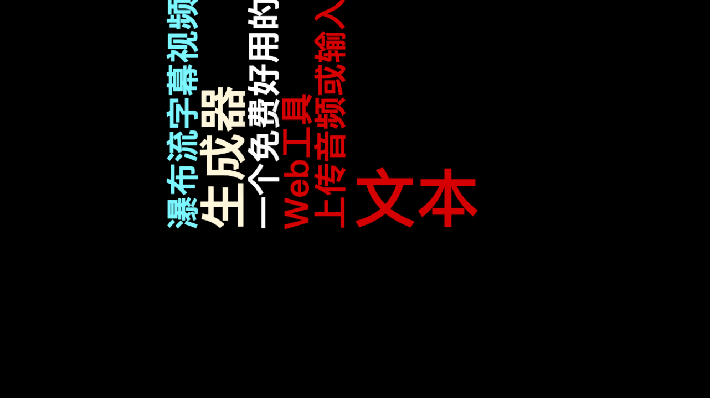
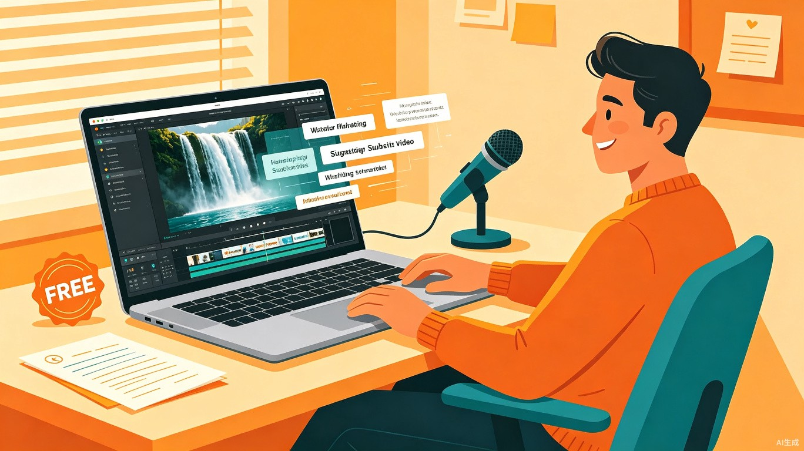

创意名称与介绍
想解决什么问题
快速生成瀑布流字幕视频。当前市面上能够制作"翻转大字"（文字逐行出现、分段翻转、卡点跳跃）效果的工具，要么功能薄弱、要么需要付费订阅。创作者缺少一个免费、高效、可控的独立解决方案来快速产出这类高传播力的文字视频。
为什么会想到做这个
某大厂将瀑布流字幕视频生成功能作为剪辑工具的会员专属功能，用户必须先订阅才能使用——且功能受限、效果模板少、无法精细调节。这直接激发了一个想法：做一个完全免费的、功能更强的开源替代品，让每个创作者都能无门槛地使用这个高传播力的视频形式。
大概是什么产品
一款基于 Web 浏览器的瀑布流字幕视频生成工具。核心流程简洁高效：
上传音频
或直接输入文本
自动断句
智能对齐音频波形
选择风格
翻转 / 跳跃 / 缩放
一键导出
高清视频文件
目标用户及痛点
面向哪些用户
核心用户为需要将音频/文案快速转化为瀑布流字幕视频的内容创作者：
- 口播博主 — 录制好音频后，一键生成带翻转大字效果的口播视频
- 知识科普 / 金句分享账号 — 将文案快速制作成节奏感强的大字视频
- 歌词二创博主 — 上传歌曲音频，自动生成歌词卡点翻转视频
- MCN 团队 — 批量将音频素材转化为可发布的文字视频

在什么场景下使用
用户在"音频/文案已有，需要快速生成视频"的场景下使用。核心场景是将口播录音、演讲音频、歌词或文案稿件快速转化为可发布到短视频平台的瀑布流字幕视频，无需复杂剪辑操作。
当前痛点
在瀑布流字幕字幕生成器出现之前，创作者面临以下困境：
- 首先要付费订阅 — 大厂工具将此功能锁在会员墙后，不订阅就无法使用
- 效果不可调节 — 付费工具提供的翻转效果模板有限，翻转角度、速度、缓动曲线均无法自定义
- 排版不灵活 — 字体大小、行间距、文字位置等排版选项缺乏自由度
- 批量不可行 — 目前工具只能逐条制作，无法批量生产，增加人工成本
价值与意义
商业价值
免费用户可使用基础功能；付费用户解锁更多音色甚至音色克隆、高级动效模板等。按次付费、无需订阅，大幅降低用户付费心理门槛。未来可拓展至小程序端、App 端，构建多端产品矩阵。
效率提升
支持批量生成，一次上传多段音频/文本即可批量产出视频。所有参数调节直观简单——拖拽滑块调整翻转速度、选择预设动效曲线、实时预览效果，所见即所得。
商业模式亮点：按次付费 vs 订阅制
传统大厂工具采用订阅制——用户不管用多用少，每月都要固定付费，心理门槛高。瀑布流字幕视频生成器采用按次付费模式：基础功能永久免费，高级功能（克隆音色、专属动效包）按使用次数计费。用多少付多少，零承诺、零压力，对偶尔使用的个人创作者和需要大量产出的团队都更友好。
未来拓展方向
从 Web 端起步，逐步拓展至微信小程序（触达下沉市场用户）和独立 App（提供更强大的离线处理能力）。同时可开放 API 接口，与已有剪辑工具和内容平台深度集成，成为短视频内容生产链路中的基础设施。
一句话总结
瀑布流字幕视频生成器是一款免费、好用、比付费工具更强的 Web 端翻转大字视频生成工具。它以按次付费的低门槛商业模式和批量生成的高效工作流，让每一位创作者——无论个人还是团队——都能轻松产出专业级的瀑布流字幕视频，把被大厂锁在会员墙后的能力，还给每一位创作者。